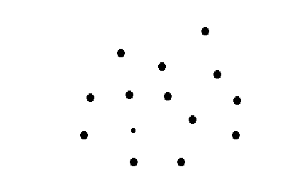

计算几何
定义
计算几何就是通过利用计算机来建立数学模型解决几何问题。
一般来说常用的就是二维计算几何。
接下来我们在二维平面意义下定义以下定义。
- 向量：既有大小又有方向的量称为向量。我们定义的向量只要不改变它的大小和方向，起点和终点就可以任意平行移动。记作 a⃗ 或 a。
- 有向线段：带有方向的线段称为有向线段。有向线段有三要素：起点，方向，长度，知道了三要素，终点就唯一确定。
- 向量的模：向量 $\overrightarrow{AB}$ 的长度称为向量的模，即为这个向量的大小。记为：$|\overrightarrow{AB}|$ 或 |a|。
- 向量的夹角：已知两个非零向量 a, b，作 $\overrightarrow{OA}=\boldsymbol a,\overrightarrow{OB}=\boldsymbol b$，那么 θ = ∠AOB 就是向量 a 与向量 b 的夹角。记作：⟨a, b⟩。显然当 θ = 0 时两向量同向，θ = π 时两向量反向，$\theta=\frac{\pi}{2}$ 时两向量垂直，记作 a ⟂ b，并且规定 θ ∈ [0, π]。
而向量的加减运算就是直接遵守三角形法则。向量间的乘法运算分以下两种。
- 点乘：向量点乘（内积）是将两个向量对应元素相乘后求和的运算，结果是一个标量，反映了两个向量之间的相似度和夹角关系。具体的，对于向量 a = (x1, y1), b = (x2, y2)，我们将它的点乘定义为 a ⋅ b = x1 ⋅ x2 + y1 ⋅ y2。而在几何意义上，我们将它定义为 a ⋅ b = |a||b|cos (θ)。点乘可以反应两向量的方向关系，当两向量夹角为锐角时，点乘结果为正；夹角为直角时，结果为 0；夹角为钝角时，结果为负。点乘常用来计算夹角。
- 叉乘：向量叉乘（也称为外积或向量积）是两个向量之间的一种运算，其结果是一个新的向量。其定义为：对于向量 a 和 b，叉乘 a × b 的长度等于 |a × b| = |a||b|sin (θ)，并且其方向垂直于向量 a 和 b 所在的平面。在几何上，叉乘的结果可以表示为以这两个向量为边的平行四边形的面积。常用来求面积。
而两点直接相减就会返回一个向量，从减数指向被减数。
现在，我们开始定义一些常见的类。
点：两个 double。
向量：两个 double x, y，表示一个横轴方向长度为
x，纵轴长度为 y 的向量。
线：由一个点和一个向量表示，或者两个点。
求多边形面积：随便取一个参考点 x0（一般选原点），设 vi 表示 x0 指向 xi 的向量（即 xi − x0），则 $S=\frac{1}{2}|\sum_{i=1}^{n}v_i\times v_{(i\bmod n)+1}|$。
点线判定
点圆：直接看到圆心的距离。
点线：建出向量，归一以后判断即可。
点多边形：从点射出一条射线，交点个数为奇数就是内部，偶数为外部。或者内部点应该在所有边的同一侧，通过叉积来判断，即所有 (p → a[i]) × (a[i] → a[i + 1]) 的正负性一致时，在内部（仅限凸多边形）。
线线：快速排斥（矩形相交）；跨立（$(\overrightarrow{P_1P_2}\times\overrightarrow{P_1Q_1})(\overrightarrow{P_1P_2}\times\overrightarrow{P_1Q_2})\le0$ 且 $(\overrightarrow{Q_1Q_2}\times\overrightarrow{Q_1P_1})(\overrightarrow{Q_1Q_2}\times\overrightarrow{Q_1P_2})\le0$）；算交点是否在线段上。
线段交点：解方程。
角平分线：两条边的向量单位化后加起来。
凸包
给你几个点，求一个最小的凸多边形包含所有的点。
Graham算法
找到最左，最下的一个点，从它开始，引一条直线，从正上方不断向右倒，第一个碰到的点就是下一个凸包上的点。

找一个点复杂度 Θ(n)，总复杂度 Θ(nH)，H 为凸包点数。
上述过程看着就很有优化空间。
可以通过某种方式排序优化找的复杂度。
找到最左边（多个取最下）那个点，设为原点
对其他点进行极角排序（建议叉积）
维护一个栈，按顺序依次入栈
如果栈顶3个元素形成“回拐”，就弹出第二个元素（对于不合法的三元组，我们肯定删去里边的那个“拐”，从而使得斜率单调）
于是，按照极角排一遍序时 Θ(nlog n) 的，扫描一遍是 Θ(n) 的，总时间复杂度瓶颈在于排序。
Andrew
我们发现虽然我们可以使用叉乘避免一部分的精度误差，但总归是有精度误差的，所以我们考虑另外的一种不需要线段的斜率的算法。
我们首先按x为第一关键字，y为第二关键字从小到大排序，从最左边的点开始依次入栈，栈顶3个元素形成“回拐”时出栈。
这样做的正确性显然，但是我们发现它只能处理半边的凸包。
怎么办呢？简单考虑：直接整个倒过来再跑一遍就行了。
于是，按照坐标排一遍序时 Θ(nlog n) 的，扫描一遍是 Θ(n) 的，总时间复杂度瓶颈还是在于排序。